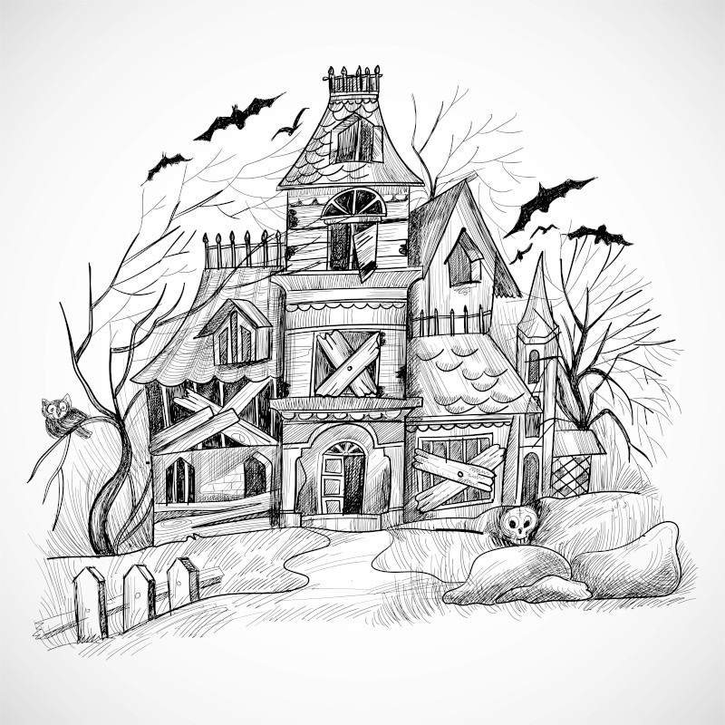

Lucas é um idoso de 81 anos, que todo dia pensa em como desperdiçou sua vida, tendo abandonado o hobby de seu falecido pai.
Foi um engenheiro. Não um dos melhores, mas mesmo assim conseguiu ser até que bem sucedido, mas apesar de todo o dinheiro que havia conseguido, nada conseguiu preencher o buraco em seu coração, um espaço que pertence somente à arte.
Atualmente aposentado, Lucas passa seus dias triste, lendo sobre pintores famosos, e lutando contra a depressão.
O que Lucas deveria fazer hoje?